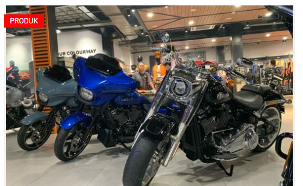
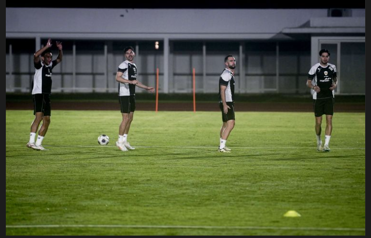
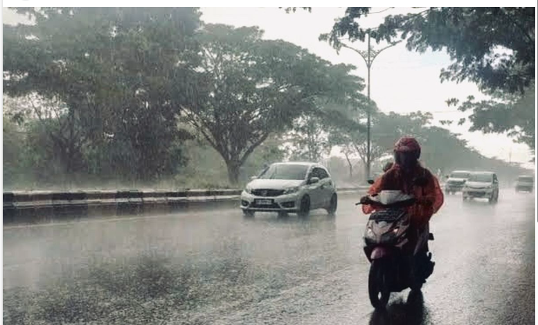
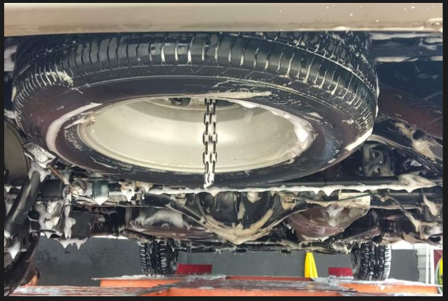

Berita Utama Hari Ini
Mantan Gubernur Jawa Barat, Ridwan Kamil, akhirnya buka suara terkait dugaan korupsi pengadaan iklan di Bank BJB yang diselidiki Komisi Pemberantasan Korupsi (KPK). Ia mengaku dalam kondisi baik dan tetap menjalani aktivitas sehari-hari meski jarang membagikannya di media sosial. "Kondisi saya sehat walafiat, lahir dan batin. Tetap melakukan aktivitas keseharian seperti biasa. Hanya saja, sejak awal tahun, memang jarang meng-update kegiatan keseharian pribadi di media sosial," ujar Ridwan Kamil dalam keterangan tertulis yang diterima

Ini Harley-Davidson Paling Diminati di Indonesia
Raka Herza, Direktur Anak Elang Harley-Davidson, mengatakan, pada tahun lalu ada beberapa jenis Harley-Davidson yang diminati konsumen Indonesia. “Kalau dari data tahun kemaren itu Road Glide. Tahun kemaren itu ada 20-an unit, habis itu antara Sportster atau Fatboy,” ujar Raka di Jakarta, belum lama ini.

Timnas Indonesia Jalani Latihan Perdana bareng Kluivert Jelang Lawan Australia
Timnas Indonesia telah melaksanakan sesi latihan perdana untuk mempersiapkan diri melawan timnas Australia dalam laga Kualifikasi Piala Dunia 2026. Sesi latihan itu digelar di Stadion Netstrata Jubilee, Sydney, pada Selasa (18/3/2025) malam waktu setempat. Akun Instagram resmi timnas Indonesia menampilkan beberapa pemain Garuda yang berlatih.

Cuaca Buruk, Persiapan Berkendara Harus Lebih Matang
Cuaca buruk diprediksi masih akan terjadi selama beberapa hari ke depan. Untuk itu, persiapan sebelum dan saat berkendara harus lebih matang agar perjalanan tetap aman. Badan Meteorologi, Klimatologi, dan Geofisika (BMKG) memberikan peringatan dini untuk cuaca pada Selasa (18/3/2025) hingga Kamis (20/3/2025). Beberapa wilayah di Indonesia diprediksi akan terjadi hujan sedang-lebat, hujan lebat-sangat lebat, hingga angin kencang

Mudik Nyaman Pakai Mobil Pribadi, Jangan Abaikan Kondisi Ban Serep
Meski memiliki peran penting, namun pada kenyataannya tak sedikit pemilik mobil yang mengabaikan perawatan ban cadangan atau serep. Bahkan, untuk sekadar melihat kondisinya pun sangat jarang dilakukan. Padahal ban serep tetap membutuhkan perawatan agar kondisinya siap pakai ketika dibutuhkan. Nah, bagi pemilik mobil yang akan melakukan perjalanan mudik Lebaran, mengecek kondisi ban cadangan sebelum berangkat menjadi hal wajib